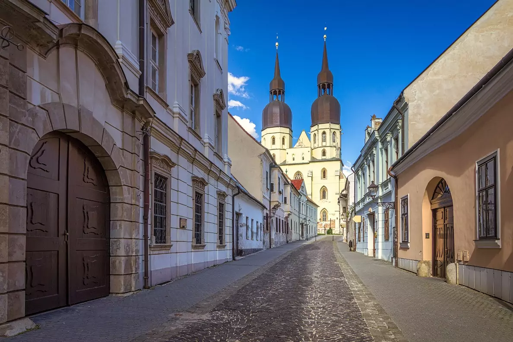

Vitajte v Trnave – Meste veží a histórie
Trnava je historické mesto známe svojimi kostolmi, hradbami a krásnym centrom. Objavte jej bohatú minulosť a pamiatky na jednom mieste.
Na tejto stránke nájdete informácie o najvýznamnejších pamiatkach mesta, zaujímavostiach a historických faktoch. Objavte krásy Trnavy s nami!
Najznámejšie pamiatky
Objavte najvýznamnejšie historické pamiatky, ktoré robia Trnavu jedinečnou.

Mapa Trnavy
Pozrite si mapu Trnavy s vyznačenými historickými pamiatkami a zaujímavosťami.
Fotoalbum

Pozrite si fotografie z historických pamiatok a uličiek Trnavy.
Prihláste sa
Chcete spoznať pamiatky Trnavy? Vyplňte formulár a rezervujte si miesto. Prehliadky sú v rôznych jazykoch a pre všetky vekové kategórie.
Kontakt
Máte otázky, návrhy alebo tipy na ďalšie zaujímavé miesta? Napíšte nám – vaša spätná väzba pomáha zlepšovať prehliadky.